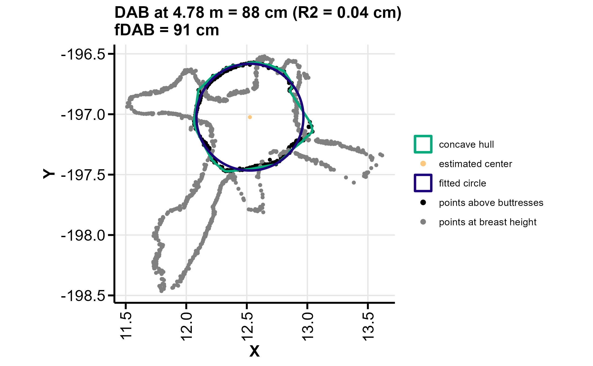
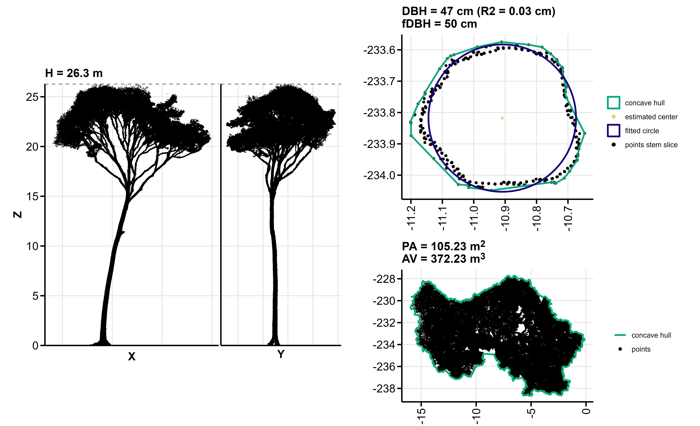

Goal
The goal of the ITSMe (Individual Tree Structural Metrics) R-package is to provide easy to use functions to quickly obtain structural metrics from individual tree point clouds and their respective quantitative structure models (QSMs).
Installation
You can install the development version of ITSMe from GitHub with:
# install.packages("devtools")
devtools::install_github("lmterryn/ITSMe", build_vignettes = TRUE)If your installation is causing trouble try uninstalling and re-installing R and RStudio if possible.
Input
The functions are developed for tree point clouds obtained with TLS and QSMs obtained with TreeQSM. The functions can, however, also be used on tree point clouds obtained from UAV-LS or MLS. You always need to keep in mind that the accuracy of the metric measurements will depend on the quality of the data.
There is also an option to read QSMs generated by RayCloudTools, RCT. But at the moment the functions to calculate specific structural metrics only work for QSMs generated by treeQSM. However, several metrics such as the total tree volume can be directly extracted from the RCT QSM after reading it in using ITSMe.
Individual tree structural metrics
Structural metrics that can be calculated with the ITSMe package are summarised in the tables below.
Basic structural metrics
| structural metric | function name | input |
|---|---|---|
| tree position | tree_position_pc, dbh_pc, dbh_qsm | point cloud |
| diameter at breast height (m) | dbh_pc, dbh_qsm | point cloud, QSM |
| diameter above buttresses (m) | dab_pc | point cloud |
| tree height (m) | tree_height_pc, tree_height_qsm | point cloud, QSM |
| projected area (m) | projected_area_pc | point cloud |
| alpha volume (m) | alpha_volume_pc | point cloud |
| tree volume (m) | tree_volume_qsm | QSM |
| trunk volume (m) | trunk_volume_qsm | QSM |
| total branch volume (m) | total_branch_volume_qsm | QSM |
| total branch length (m) | total_branch_length_qsm | QSM |
| total cylinder length (m) | total_cyl_length_qsm | QSM |
Structural metrics from Terryn et al. (2020)
These are the metrics defined in Terryn et al. (2020) which were adapted from Akerblom et al. (2017) except for the branch angle ratio and the relative volume ratio. Definitions of the metrics can be found in the help files of the functions and the papers of Terryn et al. (2020) and Akerblom et al. (2017). Normalisation according to Terryn et al. (2020) as well as Akerblom et al. (2017) is possible through the normalisation parameter included in the functions of the metrics that were adapted by Terryn et al. (2020). If the tree point cloud is provided along with the TreeQSM in the functions, dbh and tree height values are based on the point clouds rather than the QSMs. When the buttress parameter is indicated “TRUE” the diameter above buttresses instead of the diameter at breast height is used.
| structural metric | function name | input |
|---|---|---|
| stem branch angle (degrees) | stem_branch_angle_qsm | QSM |
| stem branch cluster size | stem_branch_cluster_size_qsm | QSM |
| stem branch radius (-/m) | stem_branch_radius_qsm | QSM (+point cloud) |
| stem branch length (-/m) | stem_branch_length_qsm | QSM (+point cloud) |
| stem branch distance (-/m) | stem_branch_distance_qsm | QSM (+point cloud) |
| dbh tree height ratio | dbh_height_ratio_qsm | QSM (+point cloud) |
| dbh tree volume ratio (m) | dbh_volume_ratio_qsm | QSM (+point cloud) |
| volume below 55 | volume_below_55_qsm | QSM |
| cylinder length volume ratio (m) | cylinder_length_volume_ratio_qsm | QSM |
| shedding ratio | shedding_ratio_qsm | QSM |
| branch angle ratio | branch_angle_ratio_qsm | QSM |
| relative volume ratio | relative_volume_ratio_qsm | QSM |
| crown start height | crown_start_height_qsm | QSM (+point cloud) |
| crown height | crown_height_qsm | QSM (+point cloud) |
| crown evenness | crown_evenness_qsm | QSM |
| crown diameter crown height ratio | crown_diameterheight_ratio_qsm | QSM (+point cloud) |
| dbh minimum tree radius ratio | dbh_minradius_ratio_qsm | QSM (+point cloud) |
Examples
For complete workflows, have a look at the ITSMe vignette with:
vignette("ITSMe")Calculating the diameter at breast height versus the diameter above buttresses of a tree:
library(ITSMe)
# Read the point cloud file from the Specified path to the tree point cloud file
pc_tree <- read_tree_pc(path = "path/to/point/cloud.txt")
# Use dbh_pc function with default parameters and plot the fit
out_dbh <- dbh_pc(pc = pc_tree, plot = TRUE)
# Access the dbh, residual and fdbh values from the output list
dbh <- out_dbh$dbh
residual_dbh <- out_dbh$R2
fdbh <- out_dbh$fdbh
# Use dab_pc function with default parameters and plot the fit
out_dab <- dab_pc(pc = pc_tree, plot = TRUE)
# Access the dab, residual and fdab values from the output list
ddab <- out_dab$dab
residual_dab <- out_dab$R2
fdab <- out_dab$fdab

Calculating the stem branch distance of a TreeQSM:
library(ITSMe)
# Read the TreeQSM file from the Specified path to the TreeQSM file
qsm <- read_tree_qsm(path = "path/to/QSM.mat")
# Use stem_branch_distance_qsm function
sbd <- stem_branch_distance_qsm(
cylinder = qsm$cylinder,
treedata = qsm$treedata, normalisation = "dbh"
)
# Using the point cloud information for more accurate dbh normalisation
pc_tree <- read_tree_pc(path = "path/to/point/cloud.txt")
sbd <- stem_branch_distance_qsm(
cylinder = qsm$cylinder,
treedata = qsm$treedata, normalisation = "dbh",
pc = pc_tree, buttress = TRUE
)Calculating a summary data.frame with the basic structural metrics (tree position, dbh, dab, tree height, projected area, 3D alpha volume) that can be obtained from individual tree point clouds for all point clouds in a specific folder:
library(ITSMe)
# Run summary function with default parameter settings
basic_summary <- summary_basic_pointcloud_metrics(
PCs_path = "path/to/point/cloud/folder/",
OUT_path = "path/to/output/folder/")If you set the plot parameter TRUE and provide an OUT_path, this function saves a summary figure for each tree:

Calculating a summary data.frame with the structural metrics defined by Terryn et al. (2020) for all TreeQSMs in a specific folder:
library(ITSMe)
# Run summary function with default parameter settings
qsm_summary <- summary_qsm_metrics(
QSMs_path = "path/to/QSM/folder/",
version = "2.3.0",
PCs_path = "path/to/point/cloud/folder/",
extension = ".txt"
)